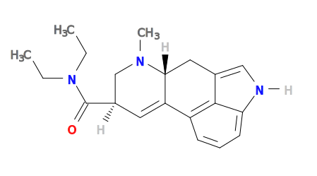

blog
Table of Contents
1 A molecule link for org-mode
Here I am exploring some ideas on compact and functional representations of molecules in org-mode. We will use some functionality from OpenBabel (https://openbabel.org/docs/dev/index.html) for conversion of formats.
One approach we could use is the SMILES representation. OpenBabel provides tools to convert SMILES to a visualization like this. Let's check out an old favorite: caffeine.
obabel -:"Cn1cnc2n(C)c(=O)n(C)c(=O)c12" -osvg

We can imagine the SMILES string is a program, and use an org-mode src block to contain it. We do have to define how to "execute" the block, and for that we will just have obabel generate the svg representation of the molecule. Here is our execute function. It simply generates the svg to stdout. We can use a :file header to capture it in a file.
(defun org-babel-execute:smiles (body params) (shell-command-to-string (format "obabel -:\"%s\" -osvg 2> /dev/null" body)))
org-babel-execute:smiles
You can find a smiles block for in Appendix of molecules that was adapted from https://en.wikipedia.org/wiki/Simplified_molecular-input_line-entry_system#Examples_2.
Now, we need a link to refer to our molecule. We want the follow action to jump to our src block which should have a name. We will have it export as the name of the block linked to the molecule definition. This should work fine for definitions in the document. It is not robust to link to molecules in other org-files in the export. That would require those files to be exported too.
(defun molecule-jump (name) (org-mark-ring-push) (org-open-link-from-string (format "[[%s]]" path))) (defun molecule-export (path desc backend) (let ((name (save-window-excursion (molecule-jump path) (org-element-property :name (org-element-context))))) (cond ((eq 'html backend) (format "<a href=\"#%s\">%s</a>" name name))))) (org-add-link-type "molecule" 'molecule-jump 'molecule-export)
Now we can make a LSD that allows us to navigate to the definition. We can also refer to a molecule in another file like LSD. The links are clickable, and should jump to the molecule definition.
1.1 Appendix of molecules
CCN(CC)C(=O)[C@H]1CN(C)[C@@H]2Cc3c[nH]c4cccc(C2=C1)c34

It would be nice to have a language mode to do special edits of SMILES src blocks. This mode does very little but provide a function that converts SMILES to CML using obabel and open it in a buffer. We redirect stderr to /dev/null to avoid seeing the messages from obabel.
(require 'easymenu) (defun smiles-cml () "Convert the smiles string in the buffer to CML." (interactive) (let ((smiles (buffer-string))) (switch-to-buffer (get-buffer-create "SMILES-CML")) (erase-buffer) (insert (shell-command-to-string (format "obabel -:\"%s\" -ocml 2> /dev/null" smiles))) (goto-char (point-min)) (xml-mode))) (defvar smiles-mode-map nil "Keymap for smiles-mode.") ;; adapted from http://ergoemacs.org/emacs/elisp_menu_for_major_mode.html (define-derived-mode smiles-mode fundamental-mode "smiles-mode" "Major mode for SMILES code." (setq buffer-invisibility-spec '(t) mode-name " ☺") (when (not smiles-mode-map) (setq smiles-mode-map (make-sparse-keymap))) (define-key smiles-mode-map (kbd "C-c C-c") 'smiles-cml) (define-key smiles-mode-map [menu-bar] (make-sparse-keymap)) (let ((menuMap (make-sparse-keymap "SMILES"))) (define-key smiles-mode-map [menu-bar smiles] (cons "SMILES" menuMap)) (define-key menuMap [cml] '("CML" . smiles-cml))))
smiles-mode